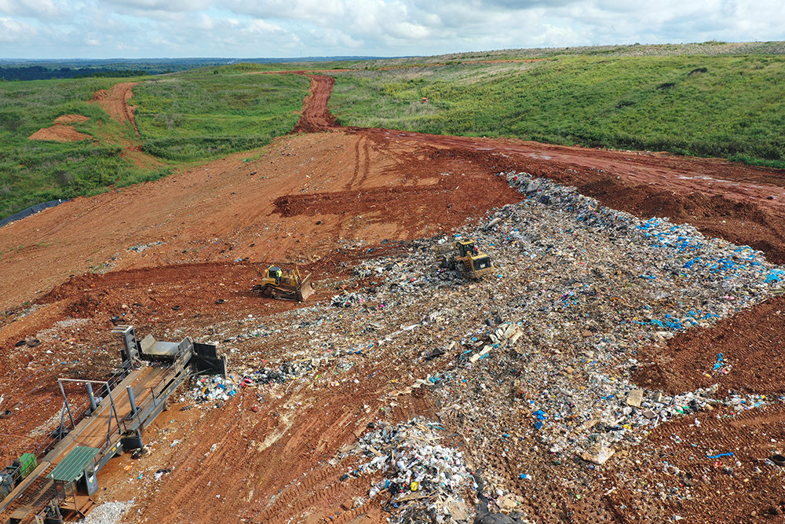

Justin Leinaweaver (Spring 2026)
Engaging Productively as Problem-Solvers
Describe the problem facing our community
Investigate the relevant stakeholders
Frame the problem for the stakeholders
Design a policy to address the problem
Take action to push the plan forward!
Defining our Environmental Problem as a CPR
The problem of food waste defined as…
Food insecurity
Food waste being generated
Food waste reaching the landfill
Food waste in the landfill (emissions ↑, capacity ↓)
Defining Food Waste as a CPR
1. The “flow” of food creating insecurity
| Resource System | Resource Units | Notes |
|---|---|---|
| The Community | Food (lbs) | Businesses vs Families vs Charities |
| The Community | Grocery store placement | Neighborhood food deserts |
| The Community | Farm output (lbs) | Food for humans, animals or industry |
Defining Food Waste as a CPR
2. The “flow” of waste being generated
| Resource System | Resource Units | Notes |
|---|---|---|
| Households | Food waste (lbs) | Productive use vs thrown away |
| Grocery stores | Food waste (lbs) | Productive use vs thrown away |
| Restaurants | Food waste (lbs) | Productive use vs thrown away |
Defining Food Waste as a CPR
3. The “flow” of waste being transported
|———————|——————————-|—————————| | Community Roads | Miles driven | More waste, more trucks, more road damage | | Community Roads | Trucks in service (#) | More waste, more trucks, more road damage | | Community Health | Food (lbs) | Used vs Donated vs Wasted |
Defining Food Waste as a CPR
4. The “flow” as damage to the landfill
| Resource System | Resource Units | Notes |
|---|---|---|
| Landfill | Food Waste (lbs) | Reaching its capacity |
| Landfill | Food Waste (lbs) | Need for maintenance |
| Landfill | Food Waste (lbs) | Need for expansion / replacement |
| Atmosphere | Food waste (lbs) | Emissions from food waste |
| Resource System | Resource Units | Notes |
|---|---|---|
| The Community | Food (lbs) | Businesses vs Families vs Charities |
| The Community | Grocery store placement | Neighborhood food deserts |
| The Community | Farm output (lbs) | For humans, animals or industry |
| Households | Food waste (lbs) | Productive use vs thrown away |
| Grocery stores | Food waste (lbs) | Productive use vs thrown away |
| Restaurants | Food waste (lbs) | Productive use vs thrown away |
| Community Roads | Miles driven or Trucks (#) | More waste = more trucks / damage |
| The Community | Food (lbs) | Health: Used vs Donated vs Wasted |
| Landfill | Food Waste (lbs) | Filling capacity |
| Landfill | Food Waste (lbs) | Increased maintenance |
| Landfill | Food Waste (lbs) | Need for expansion / replacement |
| Atmosphere | Food waste (lbs) | Emissions from waste |
Outcome 1: Baseline Argument Report
Make a three premise argument that we have an environmental problem to address in our community:
Premise 1 - This is an important problem
Premise 2 - This is a public problem
Premise 3 - The problem should be addressed collectively
Describing the Problem - Human and Environmental Health
Submit evidence we can use to deepen our understanding of our chosen environmental problem in terms of its impacts on human and/or environmental health
In other words, how does food waste negatively impact the HEALTH of individuals, groups or our environment?
Please don’t submit something that has already been submitted.
Describing the Problem - Human and Environmental Health
Exploring the Evidence as Separate Arguments
Therefore, food waste negatively impacts human health
Therefore, food waste negatively impacts the environment
e.g. Food waste negatively impacts human health by…
e.g. Food waste negatively impacts environmental health by…
The Arguments
Therefore, food waste negatively impacts human health
Therefore, food waste negatively impacts the environment
The Argument Diagrams
Consolidate (and order) the premises, and
Specify the evidence underpinning each
Outcome 1: Baseline Argument Report
Make a three premise argument that we have an environmental problem to address in our community:
Premise 1 - This is an important problem
Premise 2 - This is a public problem
Premise 3 - The problem should be addressed collectively
Describing the Problem - Economics
Submit evidence we can use to deepen our understanding of EITHER the economic causes or consequences of our food waste problem.
Please don’t submit something that has already been submitted.
Field Trip: Noble Hills Landfill
